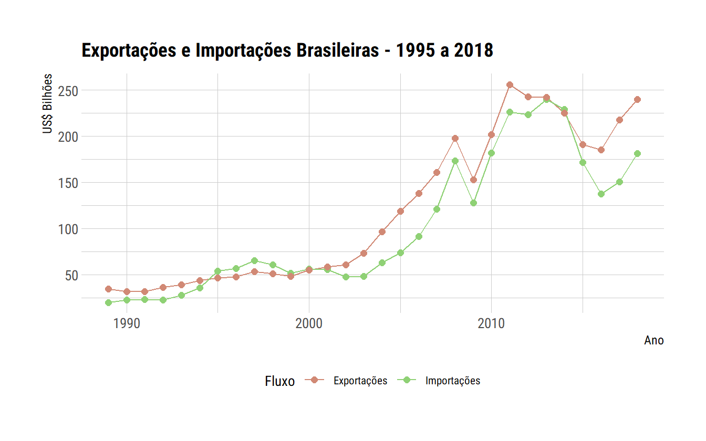
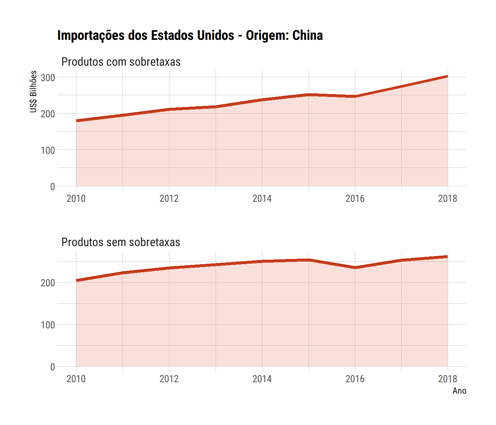
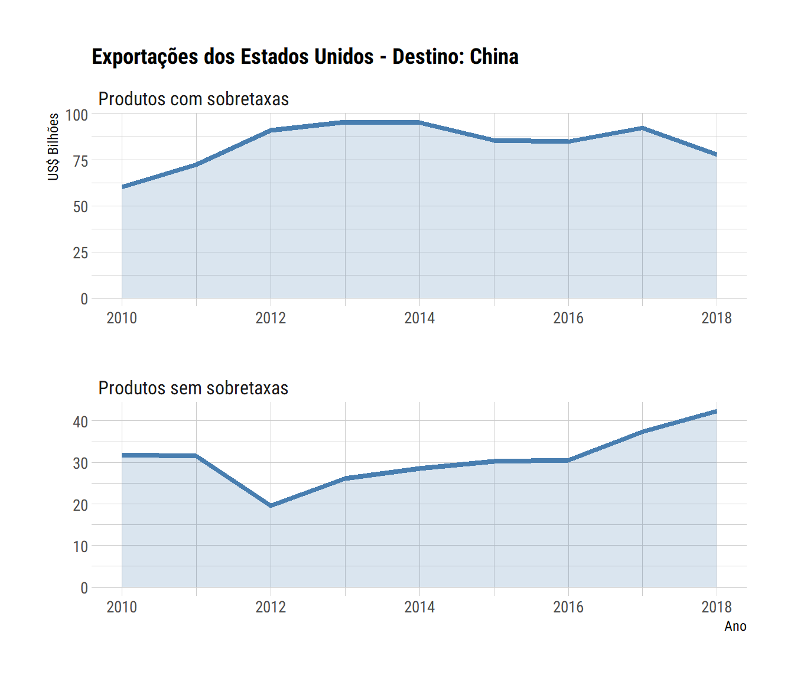

Neste post iremos fazer uma breve apresentação sobre o pacote comtradr. Este pacote permite importar dados de comércio exterior do Comtrade diretamente pelo R, utilizando a API fornecida pelo portal das Nações Unidas. Utilizamos os dados para uma breve análise sobre a Guerra Comercial.
O Comtrade é o portal de estatísticas de comércio internacional das Nações Unidas. O site fornece uma ferramenta para a extração de dados, visualizações e uma API que permite que diversas aplicações acessem diretamente os dados.
comtradrO comtradr é um pacote que fornece funções para que o usuário acesse os dados do Comtrade diretamente pelo R. Isso é uma mão na roda para quem precisa trabalhar com esses dados.
Vamos começar instalando o pacote:
# Versão do CRAN
install.packages("comtradr")
# Versão em desenvolvimento
# Sugiro instalar essa versão
remotes::install_github('ropensci/comtradr')Após a instalação, podemos carregar esse pacote:
library(comtradr)Os desenvolvedores do pacote disponibilizaram um ótimo vignette que apresenta as principais funções do pacote. Se você pretende trabalhar com esse pacote, sugiro fortemente que você dê uma lida nos exemplos:
vignette("comtradr-vignette")Antes de ir para o exemplo mais detalhado desse post, vamos fazer uma primeira consulta usando a função ct_search(). Na consulta, iremos buscar o valor importado e exportado pelo Brasil:
# Carregando o tidyverse
library(tidyverse)
# se não especificarmos os anos, a função retorna todos os anos
exp_imp_br <- ct_search(
reporters = "Brazil",
partners = "World",
trade_direction = c("exports", "imports"),
freq = "annual"
)
head(exp_imp_br)
classification year period period_desc aggregate_level is_leaf_code
1 H5 2017 2017 2017 0 0
2 H5 2017 2017 2017 0 0
3 H5 2018 2018 2018 0 0
4 H5 2018 2018 2018 0 0
5 H4 2012 2012 2012 0 0
6 H4 2012 2012 2012 0 0
trade_flow_code trade_flow reporter_code reporter reporter_iso
1 1 Import 76 Brazil BRA
2 2 Export 76 Brazil BRA
3 1 Import 76 Brazil BRA
4 2 Export 76 Brazil BRA
5 1 Import 76 Brazil BRA
6 2 Export 76 Brazil BRA
partner_code partner partner_iso second_partner_code second_partner
1 0 World WLD NA <NA>
2 0 World WLD NA <NA>
3 0 World WLD NA <NA>
4 0 World WLD NA <NA>
5 0 World WLD NA <NA>
6 0 World WLD NA <NA>
second_partner_iso customs_proc_code customs mode_of_transport_code
1 <NA> <NA> <NA> <NA>
2 <NA> <NA> <NA> <NA>
3 <NA> <NA> <NA> <NA>
4 <NA> <NA> <NA> <NA>
5 <NA> <NA> <NA> <NA>
6 <NA> <NA> <NA> <NA>
mode_of_transport commodity_code commodity qty_unit_code
1 <NA> TOTAL All Commodities 1
2 <NA> TOTAL All Commodities 1
3 <NA> TOTAL All Commodities 1
4 <NA> TOTAL All Commodities 1
5 <NA> TOTAL All Commodities 1
6 <NA> TOTAL All Commodities 1
qty_unit alt_qty_unit_code alt_qty_unit qty alt_qty netweight_kg
1 No Quantity NA <NA> 0 NA NA
2 No Quantity NA <NA> 0 NA 0
3 No Quantity NA <NA> 0 NA NA
4 No Quantity NA <NA> 0 NA 0
5 No Quantity NA <NA> NA NA NA
6 No Quantity NA <NA> NA NA NA
gross_weight_kg trade_value_usd cif_trade_value_usd
1 NA 150749493921 NA
2 NA 217739218466 NA
3 NA 181230498358 NA
4 NA 239887754933 NA
5 NA 223183474672 NA
6 NA 242578013546 NA
fob_trade_value_usd flag
1 NA 0
2 NA 4
3 NA 0
4 NA 4
5 NA 0
6 NA 0
exp_imp_br %>%
ggplot(aes(x = year, y = trade_value_usd/1e9,
color = trade_flow)) +
geom_line() +
geom_point(size = 2) +
labs(
title = "Exportações e Importações Brasileiras - 1995 a 2018",
x = "Ano",
y = "US$ Bilhões"
) +
hrbrthemes::theme_ipsum_rc(
plot_title_size = 14,
base_size = 10
) +
hrbrthemes::scale_color_ipsum(
"Fluxo",
labels = c("Exportações", "Importações")
) +
theme(
legend.position = "bottom"
)
Para tornar a apresentação do pacote mais dinâmica, vamos tentar trabalhar com um exemplo.
Segundo o presidente dos Estados Unidos, a guerra comercial seria uma vitória fácil para os americanos. Um dos argumentos era que o custo da tarifa seria suportado pelos exportadores chineses. No entanto, parece que essa não é a evidência que os economistas estão encontrando.
Neste post, vamos fazer uma análise bem simples: checar como as exportações dos Estados Unidos para a China e as importações originárias deste país foram afetadas com a guerra comercial. A comparação será realizada separando o conjunto de produtos que foram afetados com as elevações de tarifas e aqueles que não foram afetados.
Os produtos transacionados no comércio internacional seguem a classificação conhecida como Sistema Harmonizado. Os produtos recebem códigos de 6 dígitos que são comuns entre todos os países. O nosso objetivo é obter os códigos dos produtos que os Estados Unidos aumentaram suas tarifas para os bens exportados pela China e vice-versa (produtos que a China sobretaxou as exportações americanas).
A Universidade Iowa disponibiliza uma base de dados para análise da guerra comercial. Os arquivos estão disponíveis neste link. Vamos baixar os dados dos códigos (hs6 - seis dígitos) dos produtos afetados pela guerra comercial.
# criando um diretório temporário
temp_dir <- tempdir()
# caminho para o arquivo
caminho_arquivo <- file.path(temp_dir, 'hs6_trade_war.xls')
# download do arquivo
download.file(
url = "https://www.card.iastate.edu/china/trade-war-data/files-05-24-2019/h6_tariff.xls",
destfile = caminho_arquivo,
mode = "wb"
)
# lendo o arquivo e manipulando para o formato long
#readxl::excel_sheets(caminho_arquivo)
hs6_trade_war <- readxl::read_excel(caminho_arquivo) %>%
mutate(
hs6 = str_pad(hs6, width = 6, side = "left", pad = "0")
) %>%
gather(key = wave, value = tarifa, -hs6)O nosso data.frame tem 3 colunas: o código do produto (hs6), um apelido para a rodada de elevação tarifária (wave) e a tarifa (tarifa).
head(hs6_trade_war)
# A tibble: 6 x 3
hs6 wave tarifa
<chr> <chr> <dbl>
1 010121 chn3_tariff_increase 0
2 010129 chn3_tariff_increase 0
3 010130 chn3_tariff_increase 0
4 010190 chn3_tariff_increase 0
5 010221 chn3_tariff_increase 0
6 010229 chn3_tariff_increase 0
unique(hs6_trade_war$wave)
[1] "chn3_tariff_increase" "chn34_tariff_increase"
[3] "chn16_tariff_increase" "EU1_tariff_increase"
[5] "EU2_tariff_increase" "mexb_tariff_increase"
[7] "uscn34_tariff_increase" "uscn_16_tariff_increase"
[9] "can_tariff_increase" "chn60b1_tariff_increase"
[11] "chn60b2_tariff_increase" "us200b1_tariff_increase"
[13] "us200b2_tariff_increase" "us300b_tariff_increase"
[15] "us_sa_tariff_increase" "india_tariff_increase"
[17] "turkey_tariff_increase" Vamos obter os códigos de produtos que tiveram as tarifas elevadas pelos Estados Unidos na importação de produtos chineses.
usa_chn_codes <- hs6_trade_war %>%
filter(str_detect(wave, '^uscn|^us200'),
tarifa > 0) %>%
select(hs6) %>%
distinct() %>%
mutate(wave = "guerra")Fazemos o mesmo no sentido inverso. Isto é, a retaliação da China.
chn_usa_codes <- hs6_trade_war %>%
filter(str_detect(wave, '^chn'),
tarifa > 0) %>%
ungroup() %>%
select(hs6) %>%
distinct() %>%
mutate(wave = "guerra")Além dos códigos dos produtos, precisamos dos dados de importações e exportações dos Estados Unidos com a China por produto. Para isso, vamos utilizar novamente o pacote comtradr. Dependendo da combinação de parâmetros, a API do comtrade só permite baixar dados de 5 em 5 períodos. No exemplo abaixo, iremos baixar ano a ano aproveitando a facilidade que a função map_df() do purrr nos proporciona. Para cada valor do objeto anos, será executado o código que está entre {} e os resultados serão combinados automaticamente em um data.frame. O código abaixo recupera os dados para os anos de 2010 a 2018:
anos <- 2010:2018
dados_usa_chn <- map_df(anos, ~{
ct_search(
reporters = "USA",
partners = "China",
trade_direction = c("imports", "exports"),
freq = "annual",
start_date = .x,
end_date = .x,
commod_codes = "AG6"
) %>%
select(year, period, reporter, partner, trade_flow,
commodity_code, trade_value_usd, netweight_kg)
})
head(dados_usa_chn)
year period reporter partner trade_flow commodity_code
1 2010 2010 USA China Export 010190
2 2010 2010 USA China Export 010310
3 2010 2010 USA China Export 010391
4 2010 2010 USA China Export 010392
5 2010 2010 USA China Export 010511
6 2010 2010 USA China Export 010519
trade_value_usd netweight_kg
1 229900 NA
2 1215825 139450
3 4575 1503
4 8857 5335
5 29815602 463999
6 34568 382Para finalizar, vamos verificar como foi a evolução das importações dos Estados Unidos originárias da China até 2018 e o fluxo contrário (exportações dos Estados Unidos para a China). Os gráficos separam os produtos em dois grupos: um que agrega todos os produtos que estão sujeitos às elevações tarifárias e um outro grupo com os produtos que, até o momento, estão fora da guerra comercial.
dados_usa_chn %>%
left_join(usa_chn_codes, by = c("commodity_code" = "hs6")) %>%
mutate(wave = ifelse(is.na(wave),
"Produtos sem sobretaxas", "Produtos com sobretaxas")) %>%
filter(trade_flow == "Import") %>%
group_by(year, wave) %>%
summarise(trade_value = sum(trade_value_usd/1e9)) %>%
ggplot(aes(x = year, y = trade_value)) +
geom_line(color = "#c23616", size = 1.5) +
geom_area(fill = "#e66649", alpha = 0.2, show.legend = FALSE) +
facet_wrap(~ wave, scales = "free",
ncol = 1) +
labs(
title = "Importações dos Estados Unidos - Origem: China",
x = "Ano",
y = "US$ Bilhões"
) +
hrbrthemes::theme_ipsum_rc(
plot_title_size = 14,
strip_text_size = 12,
base_size = 10
)
No caso das importações americanas, verifica-se que, mesmo para o conjunto de produtos sujeitos às novas tarifas, houve aumento de importação. Apesar de não podermos afirmar que as novas tarifas não tiveram efeitos, pois a importação poderia ter crescido ainda mais caso não houvesse a guerra comercial, pode-se constatar que elas não foram suficientes, até o momento, para reduzir as importações, o que era o objetivo inicial.
Para as exportações dos Estados Unidos destinadas à China, observa-se que as importações dos produtos que sofreram com a retaliação chinesa apresentaram queda em 2018. Por outro lado, os produtos que não estão sujeitos às novas tarifas continuaram sua trajetória de crescimento. Parece que a guerra comercial não é tão fácil assim.
dados_usa_chn %>%
left_join(chn_usa_codes, by = c("commodity_code" = "hs6")) %>%
mutate(wave = ifelse(is.na(wave),
"Produtos sem sobretaxas", "Produtos com sobretaxas")) %>%
filter(trade_flow == "Export") %>%
group_by(year, wave) %>%
summarise(trade_value = sum(trade_value_usd/1e9)) %>%
ggplot(aes(x = year, y = trade_value)) +
geom_line(color = "#487eb0", size = 1.5) +
geom_area(fill = "#487eb0", alpha = 0.2, show.legend = FALSE) +
facet_wrap(~ wave, scales = "free",
ncol = 1) +
labs(
title = "Exportações dos Estados Unidos - Destino: China",
x = "Ano",
y = "US$ Bilhões"
) +
hrbrthemes::theme_ipsum_rc(
plot_title_size = 14,
strip_text_size = 12,
base_size = 10
)
O pacote comtradr é uma mão na roda para quem precisa acompanhar e/ou analisar dados de comércio exterior. Com essa integração com o R, é possível criar relatórios automatizados com o RMarkdown ou aplicações web com o Shiny. Enfim, nosso objetivo era apresentar esse pacote para quem não o conhecia ainda. Até a próxima!